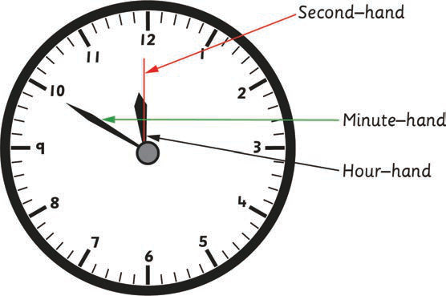
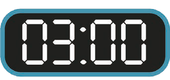

4. How many seconds did Musa spend?
5. How many seconds did Hassan spend?
6. How many minutes and seconds did Sofia spend?
Reading time in the 12-hour format
When reading an analogue clock, the shortest arrow is the hour-hand. The longer arrow is the minute-hand; while the longest and thinnest is the second-hand. All the clock arrows rotate in the clockwise direction.

Second-hand
Minute-hand
Hour-hand
The face of a digital clock displays two pairs of digits. The pairs are separated by a colon (:). The first pair is for hours and the other for minutes. This is illustrated in the following figure.
